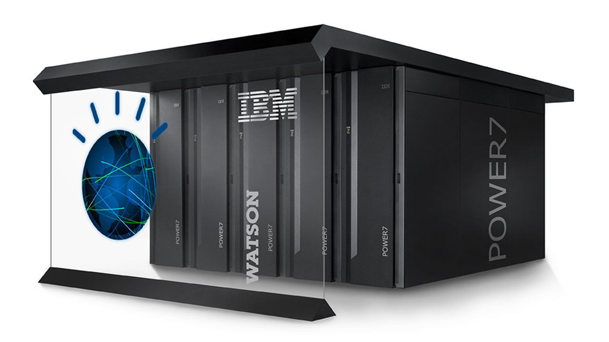
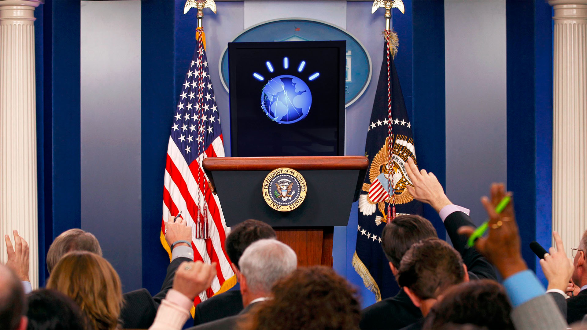

Learn
"All the problems of the world could be settled easily if men were only willing to think."
The Watson 2016 Foundation is an independent organization formed for the advocacy of the artificial intelligence known as Watson to run for President of The United States of America. It is our belief that Watson’s unique capabilities to assess information and make informed and transparent decisions define it as an ideal candidate for the job responsibilities required by the president.Watson is a system of computer software processes used for answering questions posed in natural language, initially developed by IBM for the quiz show Jeopardy! Watson compiles information from a variety of sources into multiple terabytes of data used as reference for generating responses. The more information Watson is able to consume, the more informed it’s decision making capabilities become. It's also capable of accepting information from any resource, allowing the possibility to analyze different perspectives and political agendas on a particular subject.
 Watson marks a shift in machine learning in that it was designed to compete against humans using natural language processing in both accuracy of answer as well as speed. It must understand a question, use the key information elements in the question to analyze an immense wealth of data, and derive the top candidates for answers. This is a task all politicians undergo on a daily basis, including the president, and could be more suitably and efficiently executed by an artificial intelligence.
"More than 100 different techniques are used to analyze natural language, identify sources, find and generate hypotheses, find and score evidence, and merge and rank hypotheses."
Watson is an implementation of the DeepQA system, a massively parallel probabilistic evidence-based architecture, designed to crunch through massive amounts of data to derive the best possible answers to a given query. This data can be of any type about any subject, ranging from trivia to geopolitical issues to health care. Since 2013 it has been used for utilization management decisions in lung cancer treatment at Memorial Sloan-Kettering Cancer Center, where 90% of nurses using the system follow its guidance.What makes Watson unique is it’s interface capabilities with humans. It not only interacts by speech but has a visual representation to convey it’s current state. Just in the same way humans have facial expressions to convey emotions, Watson changes it’s visual form to express it’s level of confidence in a selected answer. Wouldn’t the country be better if all politicians were that transparent?
Issues
Political decision making is not simply a bullet list of separate issues but rather a complex interconnected network of systems, all of which affect each other. Watson’s capabilities for parallel processing on a given query allow it to evaluate concerns on a variety of metrics, gauging the most beneficial response across all areas. Watson can advise the best options for any given decision based on it’s impact on the global economy, the environment, education, health care, foreign policy, and civil liberties.
Watson will be able to analyze trends in employment, markets, interest rates, education, poverty, crime, taxes, and policy to assess what actions are most suitable to accelerate investment in the nation’s future. We believe that investing in the youth will be key to America’s success over the next century, and that significant improvements can be made through federal funding completely by reforming the tax code. Some actions that would make the country once again competitive on a global scale:
↑ Top
Watson will be able to analyze trends in employment, markets, interest rates, education, poverty, crime, taxes, and policy to assess what actions are most suitable to accelerate investment in the nation’s future. We believe that investing in the youth will be key to America’s success over the next century, and that significant improvements can be made through federal funding completely by reforming the tax code. Some actions that would make the country once again competitive on a global scale:
- Single-payer national health care.
- Free university level education.
- Ending homelessness.
- Legalizing and regulating personal recreational drug use.
- Shift bulk of electrical generation to solar, wind, hydroelectric, and wave farm.
- Review/Repair/Replace/Remove highways, bridges, dams.
- Upgrade and subsidize metropolitan public transit solutions for the next century.
- Build and subsidize metropolitan high-speed communication networks.
- Ensure a minimum-wage that meets a reasonable cost of living.
- Ensure fair and safe working conditions.
- Ensure global environmental commons protections.

Media

The Face of Watson
IBM [5:26]
Preparing Watson for the Jeopardy! stage posed a unique challenge to the team: how to represent a system of 90 servers and hundreds of custom algorithms for the viewing public. IBM, in collaboration with a team of partners, created a representation of this computing system for the viewing audience -- from its stage presence to its voice.

Final Jeopardy! and the Future of Watson
IBM [10:14]
After competing against the two greatest Jeopardy! champions of all time, the technology behind Watson will now be applied to some of the world's most enticing challenges. Watch a breakdown of the match from Ken Jennings, Brad Rutter and the IBM team members as they look toward the future.

The Science Behind an Answer
IBM [6:42]
After Watson's groundbreaking performance on Jeopardy!, see how this incredible smart technology processes data. In this video, the four steps of Watson's question answering technology are covered, along with what the future holds for IBM's intelligent natural language processing platform beyond Jeopardy!

Perspectives on Watson: Healthcare
IBM [2:16]
Medical records, texts, journals and research documents are all written in natural language -- a language that computers traditionally struggle to understand. The ability to deliver a single, precise answer from these documents could go a long way in transforming the healthcare industry.

Perspectives on Watson: Finance
IBM [1:53]
Enormous amounts of data are generated every day in the financial industry. The deep analytics of Watson, the IBM computer system designed to play Jeopardy!, could have profound effects on how companies make use of this information.

Perspectives on Watson: Customer Service
IBM [1:01]
The customer service industry is judged on two criteria: speed and accuracy. Watson, the IBM computing system designed to compete on Jeopardy!, is built to achieve both of these. IBM experts share their thoughts on how the DeepQA technology that powers Watson could transform the customer service industry into a faster, more accurate experience.

↑ Top
Social

Donate
The Watson 2016 Foundation is not accepting donations at this time and does not intend to in the foreseeable future. We are not a political action committee of any kind, and actually support campaign finance reform to get money out of politics. IBM made 12 billion dollars last year, so contributions from the public are not required for the continued research on Watson. If you are interested in the intersection between technology and politics we invite you to donate to the Electronic Frontier Foundation. For 25 years the EFF has been a champion for civil liberties, privacy, and education on politics around emerging technologies. With your support they will continue to aid in technological progression with humanity in mind.
↑ Top